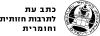

גליון 10
מאמרים
שהאחרון יכבה את האור — עידו פוקס וטל בן צבי
מסות
הדרך — גלילי שחר
מבנה טרומי — ידידיה גזבר
רשימות
משטרת ישר-אל הלב, מבחר דוחות 2023-2020 — השוטרת אז-אולי
נצרת, עיר הבשורה האקטיביסטית — ח'ולוד אבו אחמד
בדיונות
בִּדְיוֹנְיוֹם — שמעון אדף
שיחה עם ציפור — הילי כהן-מגורי
תרגומים
ידעים ממוקמים — דונה האראוויי
